1、面向对象
面向对象是一种程序设计理念，被绝大多数程序语言所使用，熟悉的C++，java等都可以使用面向对象来进行程序设计。使用它进行程序设计，可以最大限度地提高程序代码的可复用性和可维护性，如果您想学习程序设计，那么这种设计方法是必须需要掌握的。
为了降低用户的学习门槛，火山对这套理念进行了最大限度的精简，只保留了其精华部分，因此学习起来并不难，只需要跟着本书一步一步的学习很容易就可以掌握。
关于面向对象的详细解说可看“第二节”的内容。
2、名称
火山平台中的名称共有两个，分别为“单名称”和“全名称”。
2.1 单名称:
单名称必须以“英文字母/下划线字符/汉字字符”开头，后面跟随“英文字母/下划线字符/数字/汉字字符”。如未特殊标注，本文档中所提出的所有“名称”均为单名称。
如下图所示：一个变量，一个方法名或一个类名，均可以叫“单名称”。
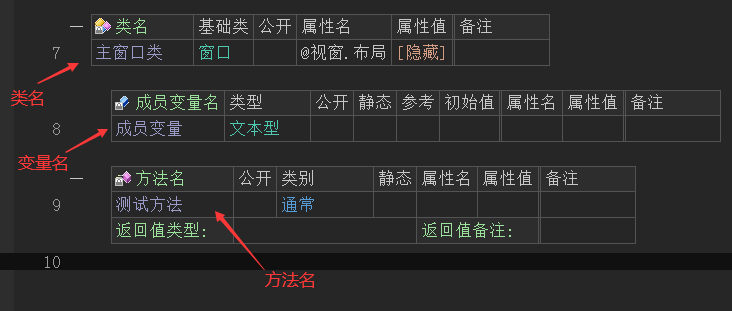
2.2 全名称:
多个单名称以句点符合组合在一起的名称称为“全名称”，例如火山代码中的包名“火山.程序”。
并且目前只有“包名”属于全名称。
注意: 火山中的名称对英文字母的大小写敏感,譬如“abc”和“ABC”是两个不同的名称。
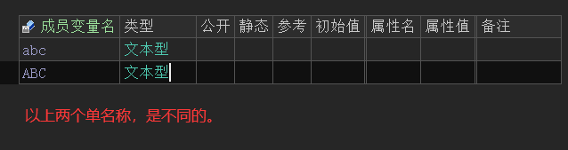
2.3 名称来源:
火山中的名称来源共有两种:
1. 系统中预先定义的名称，主要是“关键字”和“系统类库”中的名称。
这些名称均可以通过系统内置的首拼或全拼输入法进行输入。
如下图所示：自定义的名称“变量1”，可通过“bl1”或“bianliang1”进行输入。
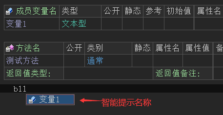
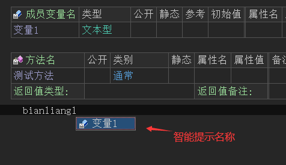
3、立即数
立即数用于直接表达某个基本数据类型的数据值，共有以下四类：
3.1 数值立即数:
（1） 十进制整数或小数，小数支持使用科学计数法，如“1.32e3”。
如果要表达这个立即数也很简单，如下图所示直接在变量的初始值中填写即可。
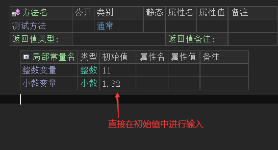
或者下图中的等于号赋值的形式。
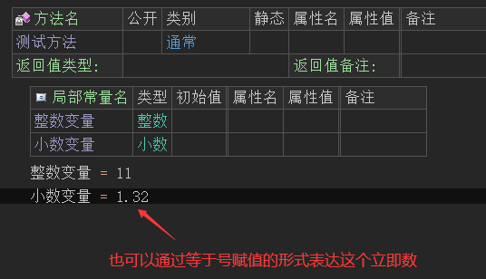
（2） 十六进制整数: “0x”后跟数字0-9或字母A-F(大小写无关)， 如“0x12AC3F”。
十六进制整数表达与整数和小数一致，如下图所示：
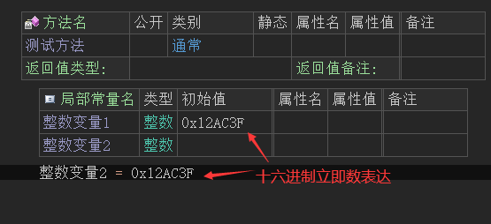
（3） 字符立即数值: 使用单引号括住的字符，如'火'，'山'用于“字符”类型的立即数。
字符立即数表达如下图所示：
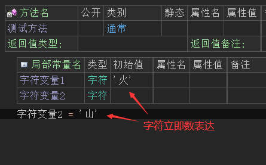
注：在字符立即数中也支持转义符操作，例如:'\t','\n'等，如下图所示：
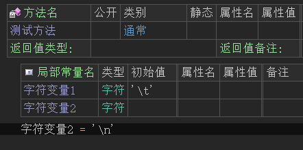
（4） 立即数之间的强制转换：譬如“1”整数立即数使用“强制类型转换”操作符可以转换成“长整数”类型。
如下图所示，“(长整数)1”提供了一个数据类型为长整数的数值立即数：
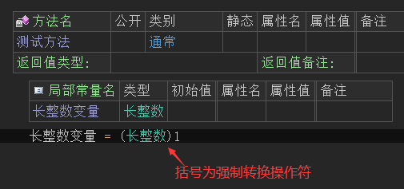
注意：强制转换操作不能在初始值中填写，下图写法是错误的。
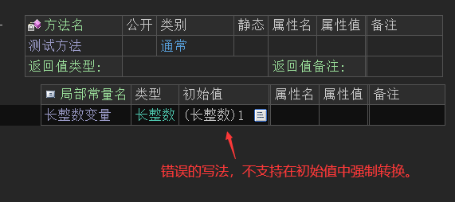
如果某整数的数值超出了整数的最大有效范围，将自动被设定为长整数数据类型。
如: “0x123456789A”将被自动认为是长整数数据类型，使用的时候需要“长整数”。
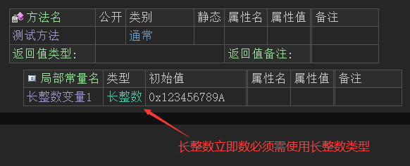
3.2 逻辑型立即数：
为真/假，只能给“逻辑型”使用。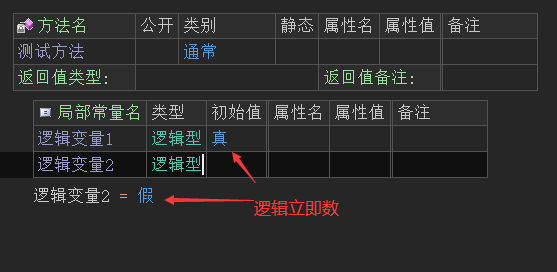
3.3 字符串立即数：
为用双引号（必须是英文引号""）括住的一段文本，只能提供给“文本型”使用，如下图所示：
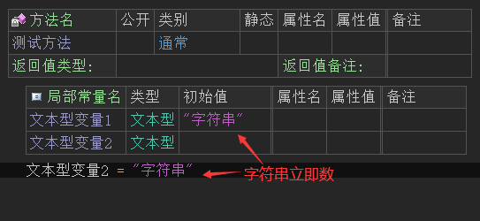
在字符串立即数中支持以下转义符操作：
转义符 解释 \b 退格符 \f 换页符 \r 回车符 \n 换行符 \t 水平制表符 \' 单引号 \" 双引号 \\ 反斜杠 \x 后跟1-3个十六进制字符,为所对应字符的代码值. 如在火山视窗平台中：“您好!\r\n祖国”在“您好!”和“祖国”之间通过使用转义符插入了一个回车和换行符。
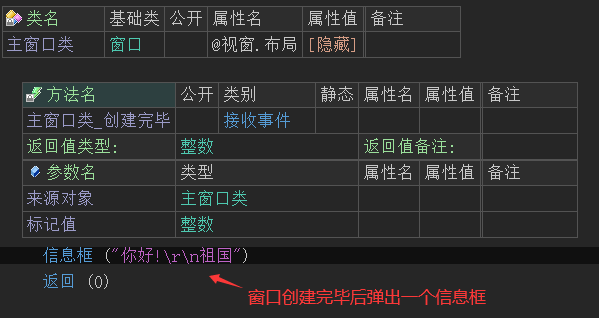
最终会出现换行效果。
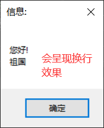
注意: 在火山安卓平台里面，如果欲达到换行效果,需要插入“\n”即可，如下图所示：
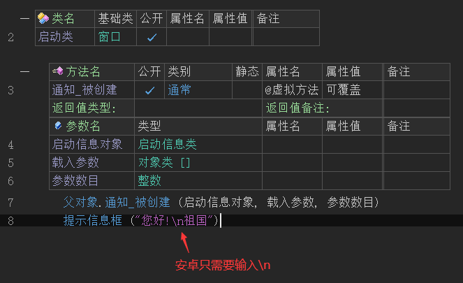
最终会出现换行效果。
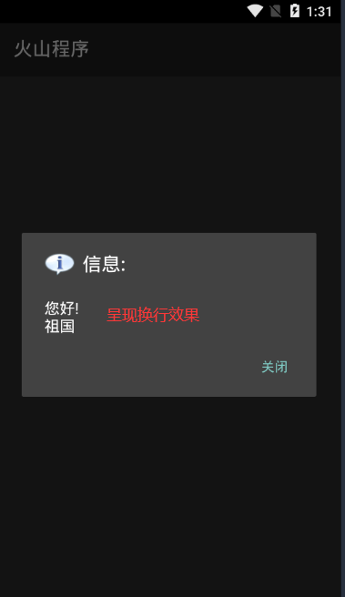
3.4 数组立即数
（只能在提供常量/变量数组初始值时使用）为使用花括号括住的立即数的组合,如: { 1, 2 }, 多维数组可以嵌套,如: { { 1, 2 }, { 3, 4 }, { 5, 6 } }
注意: 多维数组的同一维内成员数目必须相等,譬如如下格式的数组立即数是不允许的: { { 1, 2 }, { 3 } } ,因为其第2个维中的成员数目不相等。
正确的数组立即数表达如下图所示：
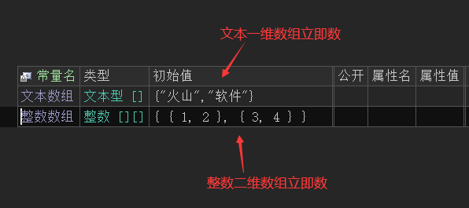
注意：火山中不支持等于号赋值数组立即数，如下图所示的写法是错误的。
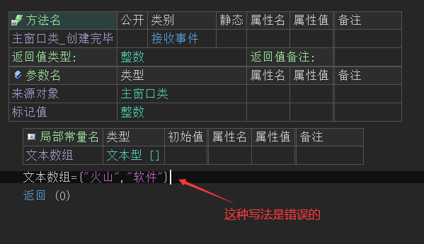
4、 数据类型
数据类型可以为以下几种:
4.1 基本数据类型，软件开发过程中必备的基本类型。
4.2 用户程序中自定义的类，称为“类数据类型”。
数组数据类型为基本或类数据类型后面跟随一个或多个数组维定义组成。
每个数组维定义由左右中括号(“[]”)组成,如果应用在变量或常量定义上，可以在中括号内部置入具体成员数目，表示生成具有对应维数的数组变量实例，可参考数组立即数中的定义。
数据类型可以在定义常量/变量/参数/方法返回值时使用，也可以在程序语句中使用。
火山视窗示例：
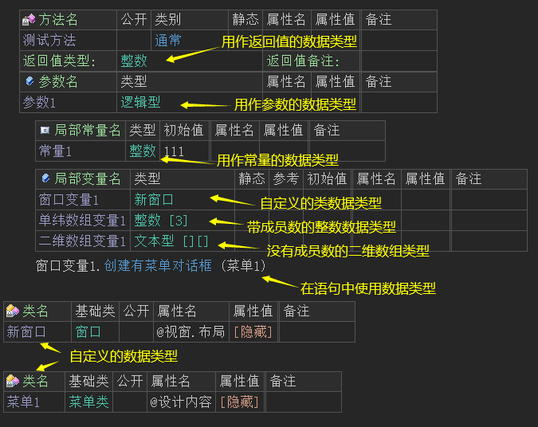
注意：在火山视窗中不支持数组类型作为参数和返回值，以下写法是错误的。
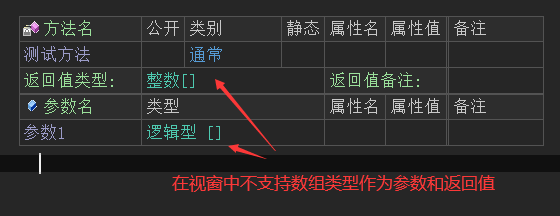
火山安卓示例：
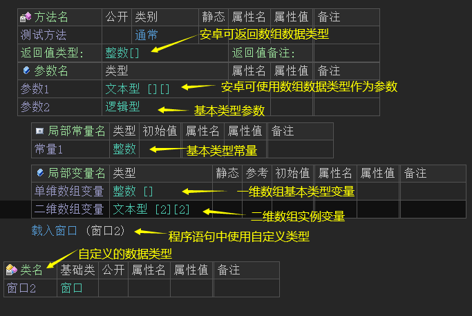